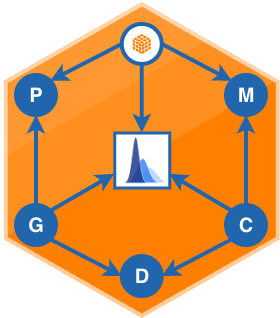

Run K-Fold Cross Validation for PGDCM Models
run_pgdcm_cv.RdRun K-Fold Cross Validation for PGDCM Models
Usage
run_pgdcm_cv(
config,
k_folds = 5,
lossFunction = "MSE",
return_samples = FALSE,
estimation_config = list(niter = 1000, nburnin = 100),
nCores = 1,
nBootReps = 200
)Arguments
- config
Model configuration list from
build_model_config.- k_folds
Integer. The number of folds to split the data into. Default is 5.
- lossFunction
Character. The loss metric to evaluate predictions against held-out data. Must be one of
"MSE"(Mean Squared Error) or"predictive"(log predictive density). Alternatively, an R function can be provided. Default is"MSE".- estimation_config
List of parameters controlling MCMC execution (
niter,nburnin). Defaults tolist(niter = 1000, nburnin = 100).- nCores
Integer. Number of CPU cores to use. Mac/Linux only. Default is 1.
- nBootReps
Integer. Number of bootstrap samples for Monte Carlo error estimation. Default is 200.